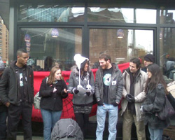

Breaking: Baristas at the Largest Starbucks in New York City (Astor Place) Honor MLK by Joining the IWW Starbucks Union
Submitted on Tue, 01/18/2011 - 3:02am
FOR IMMEDIATE RELEASE - Starbucks Workers Union (Industrial Workers of the World). Contact: Zelig Stern, 508-524-2118; Cason Bolton, Jr, 702-490-1732
NEW YORK, NY –On this the 25th anniversary of Dr. King’s holiday, baristas at the Astor Place Starbucks in Manhattan declared their membership in the 105 year old union the Industrial Workers of the World (IWW). Dr. Martin Luther King, Jr. was a staunch and outspoken defender of workers’ rights including the right to a living wage and the right to join a labor union.
The baristas represent the latest group of workers at the coffee giant to join the ongoing struggle for a living wage, more consistent scheduling, more affordable health insurance, and to be treated with basic respect and dignity by management. “I am proud to join the growing ranks of retail workers organizing together in the largest and least organized sector of our economy and at a company that has created thousands of low-wage jobs,” expressed Astor Place barista Zelig Stern. In the last year, baristas in Omaha, Nebraska and Ft. Worth, Texas have also joined the IWW Starbucks Workers Union (SWU), showing that workers’ concerns with the company are far-reaching.
“We would just like to be treated like human beings and not machines,” said union barista and Astor Place employee Cason Bolton, Jr. in reference to Starbucks’ latest initiative toward mimicking the factory assembly-line, the “Beverage Repeatable Routine.”
Today the workers delivered a collectively written demand letter (see below) to the management of the Astor Place Starbucks. Their demands included a one dollar per an hour raise across the board for all store employees. While the company’s total net revenue for FY 2010 increased by 9.5% to $10.7 billion, according to the company’s Financial Report for Nov. 4, 2010, many of the retail location employees aren’t able to make ends meet with their low Starbucks wages and are forced to live below the poverty line, many requiring public assistance.
Ex-Manager turned Union Organizer, Claudio Anzalone has seen the company move further and further from its employees-first mantra from when he started his career at Starbucks over ten years ago. “I feel great regret that Starbucks partners now need a union to protect their job and human dignity, but we do,” said Mr. Anzalone.
Another demand from the workers is the immediate reinstatement of wrongfully fired union barista Catherine Arredondo, who the union feels was targeted by the company once they found out she had attended a union meeting. Ms. Arredondo assured her co-workers that she's sticking with the Union, saying, “I’m going to stay and fight because I want my coworkers to know that organizing a union is the right thing to do.”
Workplace democracy is a large focus for the workers. Union workers at Astor Place feel strongly that each worker should have a voice in decisions regarding the day to day operations of the store, since they are the people most directly affected by these decisions. “We’re all humans and we should be treated as such, above everything else,” said Kayla Halstead, another union barista that works at the Astor Place Starbucks location. Union worker, Princess McLawrence, sites a very personal connection to organizing when she said, “I joined the IWW Starbucks Union in an attempt to regain, by force, the part of myself that I have lost since I first started at Slavebux.”
The IWW Starbucks Workers Union is a grassroots organization composed entirely of current and former Starbucks employees who have fought for respect, security, affordable health care and a living wage since 2004. Working together, SWU members have improved working conditions for Starbucks employees and won legal victories against unfair labor practices.
To Adler Ludvigsen, Howard Schultz, et al.,
Today we are declaring our membership in the Industrial Workers of The World, Starbucks Workers Union. We have spent many months, some of us years, working at Astor Place and we have come to feel that things must change. We spend more of our time at the store than any other place outside of our homes. We depend on our jobs for our livelihood. We have joined the Union because we feel that as human beings we have the right to have a say in the decisions regarding our living and working conditions and because it is clear that if we do not stand up for ourselves, Starbucks will not act in our best interests. We also care about the work that we do and we feel that until we begin to be treated fairly we will be unable to provide the customers who patronize our store with adequate services.
The following is a list of specific demands that Starbucks must meet if they truly follow their mission statement of putting partners first and catering to the needs of our customers:
Fair Compensation For Time Worked: Astor Place is one of the highest volume stores in the country. We work extremely hard to make sure that the high level of demand from our customers is met - and with a smile and a positive attitude. Yet our wages place many of us below the poverty level and all of us below the level of a living wage for New York City. We demand all Astor Place Workers receive a $1 per an hour raise. We also demand that we are given fair employee reviews. As Astor Place workers we all put in an above average effort and our performance reviews should reflect that.
Fair Scheduling Practices: On top of low wages, many Astor Place workers are not given an adequate number of hours to make ends meet. Our schedules are inconsistent and given out last minute. We all have lives, friends, loved ones, and other jobs and commitments outside of the store yet we are treated as though our only obligation is to be on call to work when it is convenient for the company. Additionally while we are working we often find that we must work extra hard due to understaffing. We demand direct employee participation in the creation of the schedules; respecting workers requests for vacations and time off; regular scheduling for those who need it; giving workers as many hours as they need to make ends meet up to full time; schedules produced 3 weeks in advance. We also demand that the store is scheduled to be fully staffed at all times; and an end to hiring new partners while cutting hours for current employees.
Respect and Dignity: The relationship between managers and workers is always an unequal one. Nonetheless we are human beings – adults - and deserve to be treated as such. Management consistently talks down to workers and displays disrespect through their actions. For example at work we must ask permission to go to the bathroom like children. There is also a consistent show of favoritism in the store. We demand that management addresses workers with a tone of respect at all times; an end to favoritism in the workplace; when workers call out sick they should not be questioned as to the nature of their illness or be written up for being sick or be forced to take on the burden for finding someone to cover their shift.
Workplace Democracy: The following demand has two parts.
- A) We live in a country that holds democracy as a central value. At work, the location where we spend almost half of our waking hours, we are denied any form of democratic rights. Decisions regarding the day to day operations of our store, including the organization of the floor, scheduling, the repair, maintenance, and replacement of equipment, the distribution of rewards, the deployment of labor, affect us as workers more than anyone else. We demand worker participation regarding all decisions made at a store level.
- B) Not only are we excluded from participating in the decisions that affect our lives directly, we are not even provided with a forum to express our opinions. We demand a once a month optional meeting where all employees of Astor Place are invited to discuss the operations of the store; the meeting should be held twice the day it occurs so that all employees can attend, regardless of when they are scheduled to work; the store manager and ASMs must be present at both meetings; employees not managers, must run the meetings and union presence must be permitted at the meetings.
Justice For Our Coworkers: It is our right to form a union, and to stand up for ourselves as workers. Starbucks has consistently violated this right by unfairly disciplining and firing union workers. WE DEMAND THAT CATHERINE ARREDONDO of Astor Place and TYLER SWAIN of 15th and Douglas Omaha, Nebraska be reinstated immediately.
Sincerely,
Kathryn Harris
Cason Bolton Jr.
Princess McLawrence
Zelig Stern
Kayla Halstead
Keila Lagara
Catherine Arredondo
Claudio Anzalone